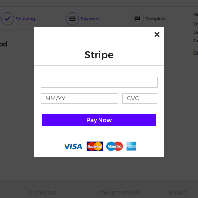
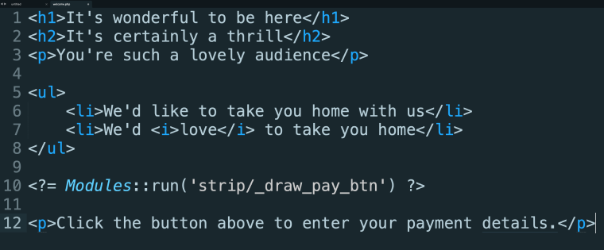

With Trongate, you can easily load another module from within an ordinary view file. This can be achieved with just one line of code:
<?= Modules::run("second_modules/some_method") ?>There are a variety of situations where this type of functionality can be extremely useful. For example, let's assume you'd like to add a 'Stripe' payment button onto the page. When users click the 'Buy Now' button, they may see a pop-up appear on their screen, inviting the user to add payment details. The inner workings of such a feature are almost certainly complicated enough to warrant having a separate 'stripe' module.

It's easy to imagine the benefits of having a separate 'stripe' module that's dedicated to handing everything to do with Stripe payments - including 'drawing' the pop-up payment modal.
If such a feature were in place then it could be called from any view file with just one line of code. For example:

When you call modules from view files, arguments can be easily passed into the methods via comma seperation. Here's an example of a variable called $name being passed as an argument:
<?= Modules::run("modules::welcome/greeting", $name) ?>
<?php
echo Modules::run("welcome/greeting", $name);
?>